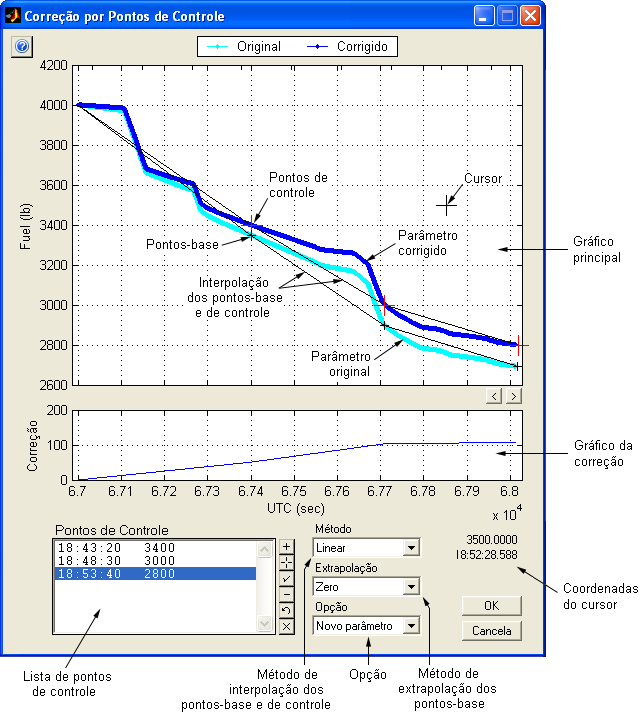
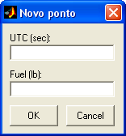
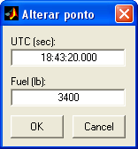
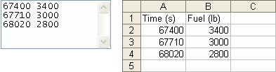

| Menu Ferramentas |
|
Essa ferramenta
permite que o
usuário efetue correções em um determinado parâmetro para que seu traço
passe
por pontos de controle definidos. Essa operação é útil quando o
parâmetro
obtido apresenta um erro não conhecido e o usuário conhece o valor
correto em
alguns pontos do voo, ou para criar parâmetros contínuos a partir de
poucas
observações ao longo do voo.
- Selecione em “y” o parâmetro que deseja corrigir;
- Selecione em “x” um parâmetro adequado de tempo
(monotônico, crescente
e sem pontos inválidos);
- Clique em “Ferramentas ► Correção por
pontos de controle”.

O exemplo acima
ilustra uma
situação em que o combustível foi obtido de forma imprecisa (por
integração do fluxômetro),
e na qual foram feitas leituras do liquidômetro
(considerado mais confiável) em três momentos
do voo. A correção faz com que a curva obtida passe pelos pontos de
controle desejados.
Descrição
A janela de
correção por pontos de
controle possui as seguintes áreas:
- Gráfico principal:
Apresenta o plote
original do parâmetro (em azul
claro), o plote
corrigido (em azul escuro), os pontos
de controle (cruzes vermelhas), os pontos-base (cruzes pretas) e as
curvas de
interpolação dos pontos de controle e dos pontos-base (linhas pretas);
- Gráfico da correção: Apresenta o plote
da correção, dada pela diferença entre as curvas de interpolação dos
pontos de
controle e dos pontos-base;
- Lista de pontos de controle: Apresenta
as coordenadas dos
pontos de controle e permite seu gerenciamento através dos botões à
direita da
lista;
- Seletor do método de interpolação: Permite
a
seleção do método de interpolação
dos pontos-base e de controle através do
plote
original. As opções
são: Linear, Spline e
Cúbico;
- Seletor de opção: Permite
escolher entre a criação de um
novo parâmetro ou a substituição do parâmetro original com os dados
corrigidos;
- Coordenadas do
cursor: Apresenta as
coordenadas do cursor, quando o mesmo estiver posicionado
sobre um dos gráficos. Caso o parâmetro x for reconhecido
como tempo, sua
coordenada será apresentada na forma HH:MM:SS.MS.
Lógica de
Operação
A correção por
pontos de controle segue
os seguintes passos:
- Ao definir os pontos de controle, são criados no plote
original pontos-base nas mesmas abscissas que os pontos de controle;
- São realizadas interpolações dos pontos-base e dos
pontos de controle,
segundo o método desejado;
- Toda a abscissa do parâmetro é mapeada através dessas
interpolações,
gerando curvas com o mesmo número de pontos que o parâmetro a ser
corrigido;
- A diferença entre a curva definida pela interpolação dos
pontos de
controle e a curva definida pela interpolação dos pontos-base fornece a
curva
de correção;
- A curva de correção é aplicada ao parâmetro original.
Na prática, o
que o método faz é
transladar cada ponto-base até o respectivo ponto de controle, levando
com eles
toda a curva.
Operação
Para alterar o
zoom do gráfico:
- Para aproximar o zoom,
use o
mouse para definir o intervalo desejado, clicando duas vezes com o
botão
esquerdo no gráfico principal.
- Para afastar o zoom,
clique
com o botão direito do mouse sobre o gráfico principal.
- Para restaurar o zoom,
exibindo toda a extensão dos dados: Dê um duplo-clique com qualquer
botão do
mouse sobre o gráfico principal.
A escala do eixo x do gráfico da correção sempre
acompanhará o gráfico pincipal.
Para deslocar a
abscissa dos gráficos (eixo x):
- Use o botão  para
deslocar os gráficos 20% para a esquerda.
para
deslocar os gráficos 20% para a esquerda.
- Use o botão  para
deslocar os gráficos 20% para a direita.
para
deslocar os gráficos 20% para a direita.
Para
acrescentar um ponto de controle:
- Clique no botão  ;
;
- Insira as coordenadas conhecidas do ponto de controle e
clique “OK”.

Caso o parâmetro x seja reconhecido como tempo, o valor pode inserido em qualquer formato
de tempo reconhecido
pelo R_DAT.
Para
acrescentar um ponto de controle clicando sobre o
gráfico:
- Clique no botão  ;
;
- Clique no ponto desejado sobre o gráfico principal, com
o botão
esquerdo do mouse (use as coordenadas do cursor como referência).
Para cancelar a operação, clique com o botão direito do
mouse.
Para alterar as
coordenadas de um ponto de controle:
- Selecione o ponto desejado na lista;
- Clique no botão  ;
;
- Altere as coordenadas conforme desejado e clique “OK”.

Para remover um
ponto de controle:
- Selecione na lista o ponto que deseja remover;
- Clique no botão  e
confirme.
e
confirme.
Para importar
uma lista de pontos:
- Clique no botão  ;
;

- No campo “Arquivos do tipo”, selecione
o tipo
do arquivo que contém a lista de pontos. As opções são: Planilha
Excel (.xls) e Arquivo de texto
(.txt
ou .dat);
- Localize o arquivo desejado e clique “Abrir”.
A formatação dos arquivos deve ser a seguinte:
Planilhas Excel: duas colunas numéricas (x e y). Linhas de cabeçalho são ignoradas.
Arquivos de texto: duas colunas numéricas (x e y) separadas por tabulação, espaço, vírgula ou ponto-e-vírgula. Linhas de cabeçalho são ignoradas.
Caso o parâmetro x seja reconhecido como tempo, os valores podem estar em qualquer formato reconhecido pelo R_DAT.
Exemplos:

Para remover
todos os pontos de controle:
- Clique no botão  e
confirme.
e
confirme.
Sair
Para confirmar a operação, clique no botão “OK” e confirme.
Para descartar a operação, clique no botão “Cancela”.
Ao clicar "OK" com a opção "Novo parâmetro" selecionada, o usuário deverá indicar o nome do novo parâmetro:

Após definir o
nome e pressionar “OK”, o novo parâmetro será
acrescentado à penúltima posição das matrizes de trabalho (antes de “No.OBS.”).
| |
Criar parâmetro a partir de tabela |
Visualizar dados em tabela | |